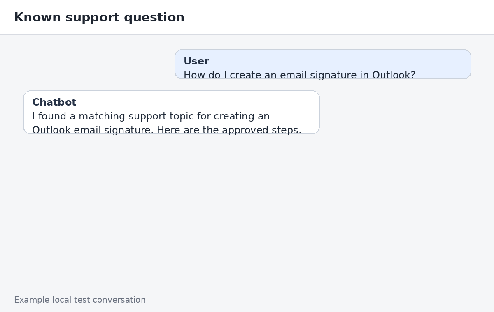
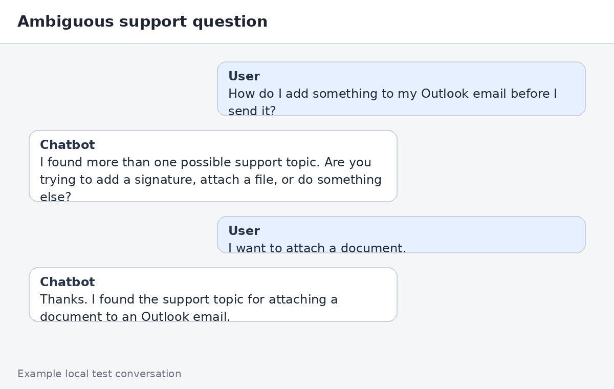
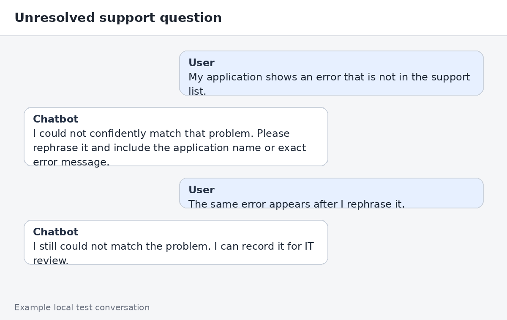

What you'll find here: Example conversations showing the three main behaviors the MVP is designed to demonstrate: a known support question, an ambiguous question that needs clarification, and an unresolved question that should be recorded for IT review.
1. Known support question
User
How do I create an email signature in Outlook?
Chatbot
I found a matching support topic for creating an Outlook email signature. Here are the approved steps.

Example local-test view of a clear support-topic match.
2. Ambiguous question
User
How do I add something to my Outlook email before I send it?
Chatbot
I found more than one possible support topic. Are you trying to add a signature, attach a file, or do something else?
User
I want to attach a document.
Chatbot
Thanks. I found the support topic for attaching a document to an Outlook email.

The chatbot asks for clarification instead of guessing.
3. Unresolved question
User
My application shows an error that is not in the support list.
Chatbot
I could not confidently match that problem. Please rephrase it and include the application name or exact error message.
User
The same error appears after I rephrase it.
Chatbot
I still could not match the problem. I can record it for IT review.

After the supported rephrase flow, an unmatched problem can be recorded for later IT review.
What these examples are meant to prove
Scenario
MVP behavior
Clear match
Return the approved support topic.
More than one plausible match
Ask a clarification question.
No reliable match after rephrasing
Offer unresolved-problem submission for IT review.
Note: These images are documentation examples of the expected local-testing experience. They are not intended to imply that the production Microsoft Teams interface is already deployed.